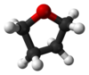

tetrahydrofuran

Definition: Tetrahydrofuran (THF), or oxolane, is an organic compound with the formula (CH2)4O. The compound is classified as heterocyclic compound, specifically a cyclic ether. It is a colorless, water-miscible organic liquid with low viscosity. It is mainly used as a precursor to polymers. Being polar and having a wide liquid range, THF is a versatile solvent.
Source: Wikipedia
Wikipedia Page
Wikidata Page